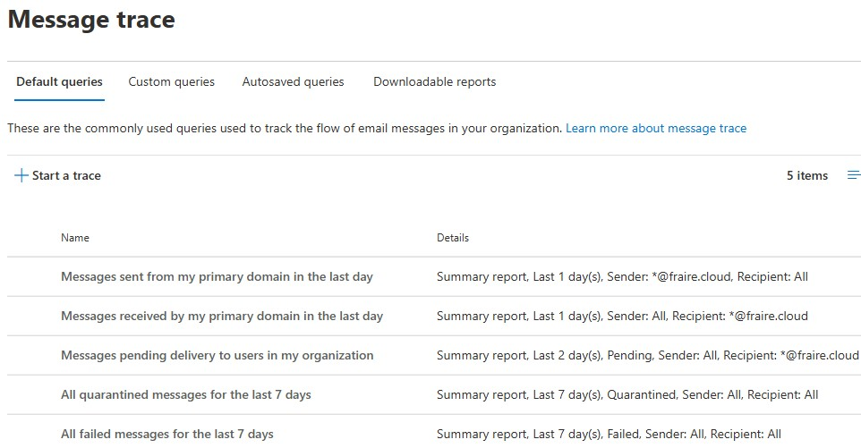
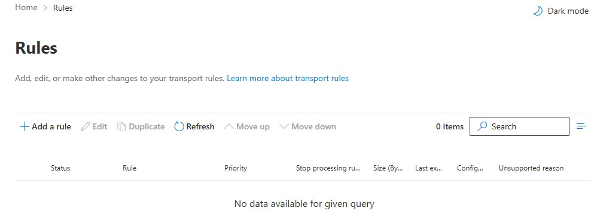

Tenant
Fraire Cloud
Platform
Microsoft 365 Business Standard
Project 001
Exchange Online Protection · Microsoft Defender · DKIM · SPF · DMARC · Mail Flow

This project demonstrates the implementation of enterprise Microsoft 365 email security best practices within the Fraire Cloud production tenant. The solution was designed to strengthen email security through layered protection using Exchange Online Protection (EOP), Microsoft Defender, DKIM, SPF, DMARC, anti-phishing policies, and secure mail-flow validation.
I independently designed, configured, validated, and documented Microsoft 365 email security controls within the Fraire Cloud production tenant. The implementation included Exchange Online Protection, Microsoft Defender, DKIM, SPF, DMARC, mail-flow validation, and security monitoring.
Organizations continue to face increasingly sophisticated email threats. This project focused on reducing risk from phishing, spoofing, business email compromise, malware, and unauthorized email access.
Fraire Cloud
Microsoft 365 Business Standard
Exchange Online
Microsoft Defender
Exchange Admin Center
Microsoft 365 Admin Center
DKIM · SPF · DMARC
Exchange Online Protection
Anti-phishing · Anti-spam
Mail-flow monitoring




Purpose: Provides cloud-based filtering against spam, malware, phishing attempts, and malicious email before messages reach user mailboxes.
Implementation: Reviewed and validated baseline protection for inbound and outbound email.
Business Impact: Helps reduce email-based threats before they reach users.
Purpose: Digitally signs outbound email so receiving systems can verify the authorized Microsoft 365 source and message integrity.
Implementation: Enabled DKIM for fraire.cloud and verified a valid status.
Business Impact: Improves domain trust and protection against impersonation.
Purpose: Identifies the mail servers authorized to send email on behalf of a domain.
Implementation: Configured a DNS TXT record authorizing Microsoft 365 to send mail for fraire.cloud.
Purpose: Works with SPF and DKIM to validate sender identity and define how receiving systems handle unauthenticated messages.
Implementation: Configured a DMARC policy and a dedicated mailbox for aggregate reports.
Successfully implemented layered Microsoft 365 email authentication and protection using Microsoft security best practices.
Exchange Online
Exchange Admin Center
Microsoft Defender
Exchange Online Protection
DKIM · SPF · DMARC
Email Authentication
Technical Documentation
Security Hardening
Troubleshooting